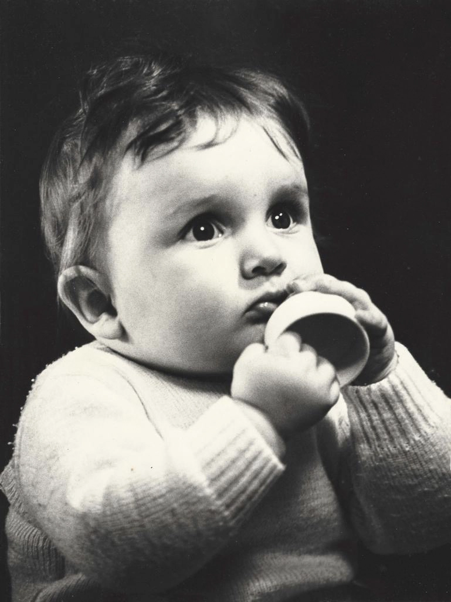
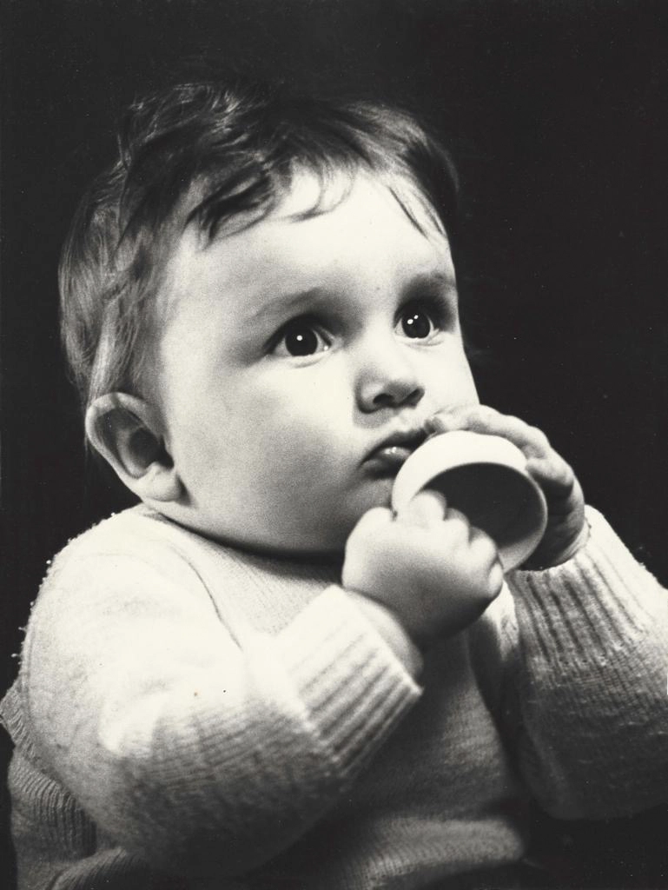

A Propos
Photographe professionnel autodidacte situé près d’Agen (47) passionné par l’image depuis ma plus tendre enfance.
Tout a débuté avec mon grand-père, dont l’une des passions était la photographie de portrait. J’ai commencé par lui servir de mini modèle, puis l’accompagnait plus tard dans mon enfance au laboratoire qu’il avait installé chez lui afin de développer les négatifs argentiques de l’époque. Nous étions alors bien loin de l’ère du numérique. Vous l’aurez compris, c’est de là que me vient cet intérêt pour la photo.
Cette passion m’a toujours suivie, ainsi j’ai acquis mon premier appareil photo numérique en 2001. C’est en 2013 que j’ai franchi le pas et me suis concentré de manière assidue à l’amélioration continue de ma technique.
L’année 2015 est également une année importante dans mon évolution photographique, avec la mise en place d’un véritable studio, équipé de matériel professionnel.
En 2018, j’ai créé un groupe sur les réseaux sociaux, regroupant photographes et modèles de la région afin d’échanger, s’entraider, et organiser nombre d’évènements autour de cette passion commune qu’est la photo.
Ma volonté, mon plaisir a toujours été, et restera de procurer du bonheur à travers l’image. Un résultat photographie réussi est selon moi principalement lié à la complicité et la confiance entre le photographe est ses sujets. Raison pour laquelle j’attache une importance toute particulière à la bonne humeur durant mes séances.
Vous désirez un book ou tout simplement avoir de belles photos, je les réalise pour vous. Mode, Couple, Grossesse, Naissance, Baptême, Mariage, Glamour, Portrait, Confiance en soi par l’image (Photo-thérapie)…
A domicile, en extérieur ou au studio, j’immortalise vos projets dans la convivialité et la bonne humeur.
Vous pouvez me contacter et suivre mon travail également sur les réseaux sociaux :
Facebook : Nicolas Lambecq
Instagram : nicolaslambecq
 
